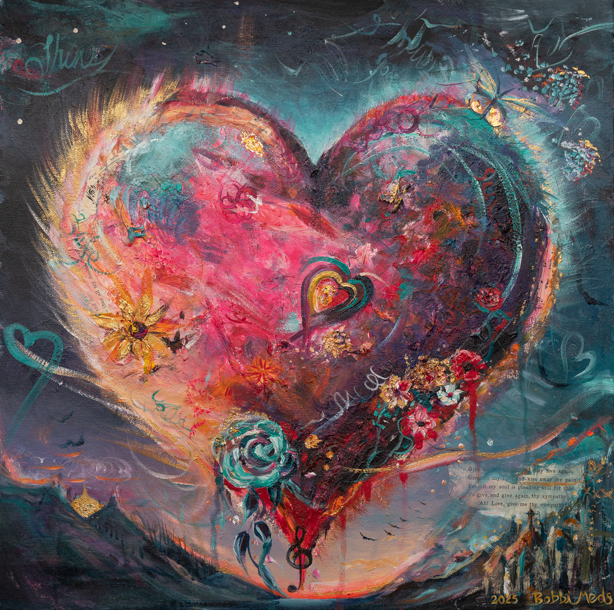

From a Welsh stone cottage
Welcome
Home.
Art, home, food and stories from a restored Welsh stone cottage.
I create beauty from what has been overlooked, and in doing so, I hope to help people feel at home.
Bobbi’s creative world
A life made from beautiful scraps
Bobbi is an artist, maker, teacher and creative host whose work brings together fine art, sculpture, ceramics, interiors, recycled materials, plant-based cooking and the deep human need for belonging.
From auction finds and forgotten objects to treasured letters, old furniture, handmade food and weathered Welsh stone, her work is rooted in the belief that beauty is rarely found in perfection. More often, it is discovered in things that have been loved, mended, used and given a second life.

Sacred Scraps
Art and workshops using keepsakes, ephemera, memory and recycled materials.
Explore the work
The Welcome Curtain
Handcrafted doorway art inspired by cottage gardens, natural materials and the idea of welcome.
Step through
The Cottage Table
Vegan recipes, sketchbook cooking, nourishment, hospitality and future cookbook work.
Gather roundA way of seeing
Hiraeth &
Wabi-sabi
Home does not have to be perfect to be beautiful.
Two ideas quietly guide Bobbi’s work. The Welsh word Hiraeth speaks of home, longing, memory and belonging. The Japanese idea of Wabi-sabi offers a way of seeing beauty in imperfection, age, repair and authenticity. Together, they express the heart of Bobbi’s creative practice.
- Hiraeth
- A Welsh word for the deep pull of home, memory, place and belonging.
- Wabi-sabi
- A respectfully held influence: beauty found in transience, imperfection and honest materials.

The door is open
Step through the blue door
Explore art, courses, doorway pieces, recipes and stories created from a Welsh cottage where everything begins with welcome.